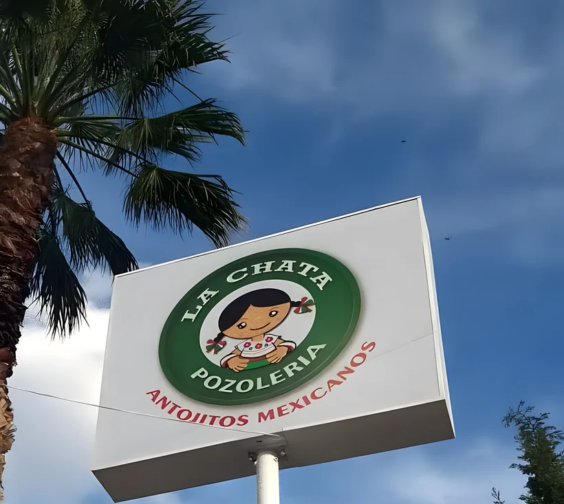
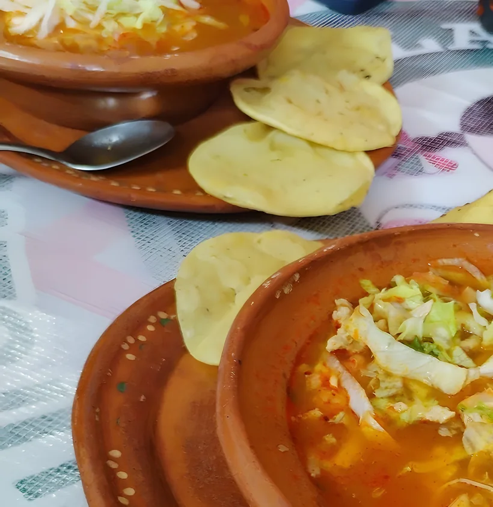
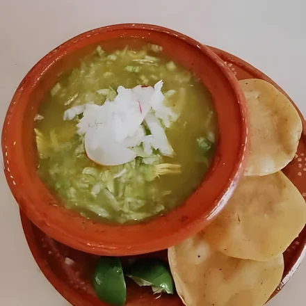
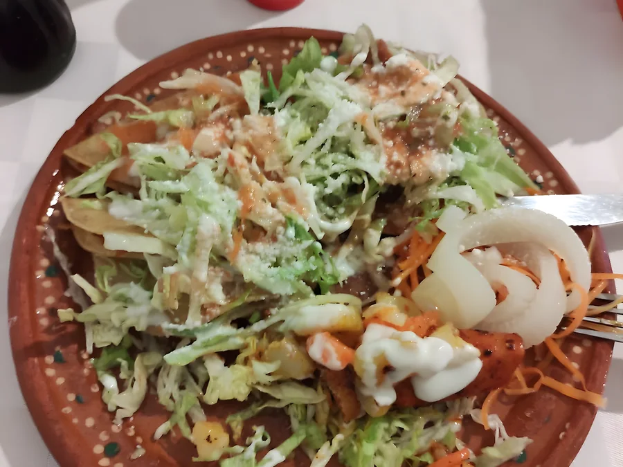
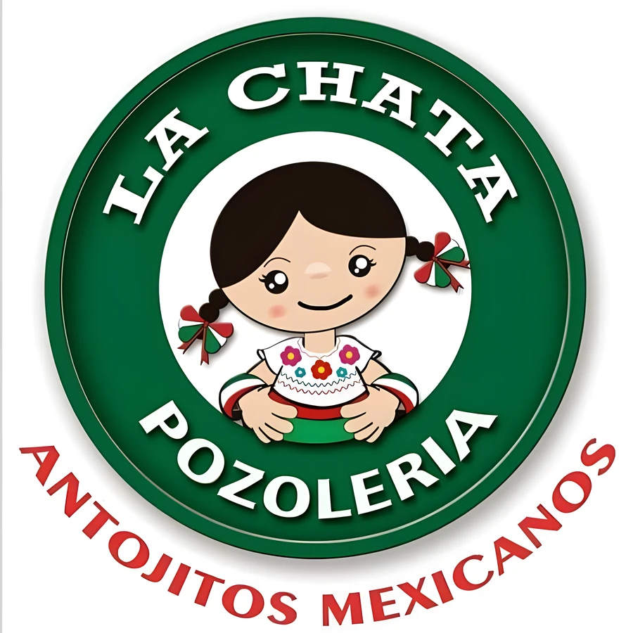

Col. Gremial / Aguascalientes
Sábado y domingo,hay pozole.
Jesús R. Macías 602, esquina 20 de Noviembre. De 3:30 a 10 de la noche.


Rojo o verde.Y nueve antojitos más.
-
Pozole rojo
Pregunta el precio
-

Pozole verde
Pregunta el precio
- Tostadas Pregunta el precio
- Enchiladas rojas Pregunta el precio
- Enchiladas verdes Pregunta el precio
- Sopes Pregunta el precio
- Tacos dorados Pregunta el precio
- Flautas Pregunta el precio
- Pambazos Pregunta el precio
- Quesadillas Pregunta el precio
- Plato hidrocálido Pregunta el precio
- Las fotos de estos antojitos se las pedimos a La Chata.
Entre $100 y $200 por persona, según lo que reportan 9 clientes en Google.

Servido en su mesa, en plato de barro.
Google / 159 opiniones
4.6
Cuatro punto seis.Las tostadas son caseras.
-
Un lugar muy acogedor donde el pozole es el protagonista, la verdad está muy rico, muy bien servido y definitivamente esas tostadas caseras están de 10, ampliamente recomendado.
Luis Andrés Esquivel Ortega
-
Muy ricos los pozoles rojo y verde, muy buenas porciones, también probe los tacos dorados y estaban deliciosos.
Víctor Manuel
-
Antojitos mexicanos 10/10. Lugar muy tranquilo, no hay música ni tv, nada de eso. Creo que solo aceptan efectivo.
Montserrat Muma
- L
- M
- M
- J
- V
- S3:30 a
10:00 pm - D3:30 a
10:00 pm
Sábado y domingo, 3:30 a 10:00 pm.
Sábado y domingo, de 3:30 a 10:00 pm.
Apartar mi pedidoSolo efectivo en el local.
Col. Gremial / Aguascalientes
Jesús R. Macías 602.Esquina con 20 de Noviembre.
- Dónde
- Col. Gremial, C.P. 20030, Aguascalientes
- Cuándo
- Sábado y domingo, 3:30 a 10:00 pm
- Teléfono
- 449 256 3283
- Pago
- Solo efectivo
- Servicio
- Para comer aquí o para llevar
- Código plus
- VPV7+39 Aguascalientes
Todo listo para completar
- 01Precios reales de los 11 platillos de la carta.
- 02Fotos originales de cada antojito (hoy solo hay 6 fotos).
- 03Link de cobro con tarjeta, si quieren dejar el solo-efectivo.

Ven y disfruta el sabor de la tradición.